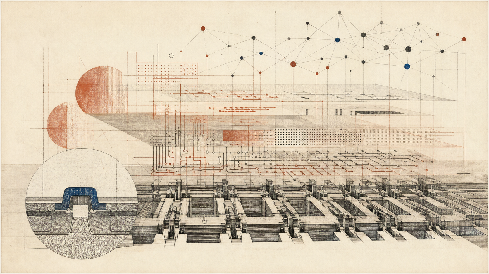

What Programming Is
Programming is the act of turning thought into instructions a machine can execute without understanding them. This room traces how that act evolved from plugboards to Python to AI agents, compares the major paradigms, and gives an honest account of what programming means now that machines write a growing share of the code.

In this room
- 1. A letter to a reader who cannot ask questions
- 2. From wires to words: the ladder of abstraction
- 3. A language is a theory of what matters
- 4. Worked example: one thought, three grammars
- 5. What the program actually is (it's not the text)
- 6. The AI era, honestly
- 7. What you can now see
- 8. Open questions
- Sources
If you've read intro-to-computer-science, you know a computer is a machine that follows instructions exactly, with no understanding of what they mean. This room is about the act of writing those instructions — what it demands of a human mind, why we invented hundreds of languages to do it, and what the act has become now that AI systems write a growing share of new code. The rooms on compilers and algorithms sit directly downstairs and next door: compilers are how these instructions reach the metal, algorithms are what the instructions are about.
1. A letter to a reader who cannot ask questions
Start with a real document. In 1843, Ada Lovelace published her translation of an Italian paper on Charles Babbage's Analytical Engine — a mechanical computer that was designed but never built. She added her own notes, longer than the paper itself. The last one, Note G, contains a table showing, operation by operation, how the Engine would compute the Bernoulli numbers: which variable goes in which column, which operation fires at which step, what each intermediate value means. It is widely regarded as the first published computer program — written for a machine that did not exist, by a person who had to hold the entire execution in her head.
That table already contains the whole discipline. Programming is writing instructions for a reader that executes them perfectly and understands them not at all. Every other kind of writing assumes a reader who fills gaps — you say "add up the even numbers" to a person and they know what you mean. A machine fills no gaps. If you say "add the numbers" and forget to say where to start, the machine doesn't guess; it does something, and that something is whatever your incomplete instructions literally say. Lovelace had no machine to catch her errors, so she had to simulate the machine herself, step by step, on paper. (Her table, as printed, contains a small error — which is fitting. More on bugs below.)
So here is the definition this room stands on: programming is the act of making a thought precise enough that a machine with no understanding can carry it out. The precision is the work. Typing is incidental.
2. From wires to words: the ladder of abstraction
The climb
Programming moves away from the machine
As of 25 August 2026
- Note GAda Lovelace specifies the Analytical Engine's Bernoulli-number operations on paper.
- PlugboardsENIAC programs are physical arrangements of switches and cables.
- A-0Grace Hopper's translator assembles subroutine calls into a runnable program.
- FORTRANA mainstream high-level language lets formulas stand in for assembly.
- Language bloomLisp treats programs as data, C stays close to the machine, and SQL states goals.
- Plain languageInstructions given to a language model extend the same abstraction climb.
The history of programming is one long climb away from the machine, and every rung has a date on it.
1946: programming is physical. ENIAC, one of the first general-purpose electronic computers, was programmed by setting switches and plugging cables. The first programmers — six women, including Jean Bartik and Betty Holberton, hired as "computers" and largely uncredited for decades — would take days to wire up a job that ran in minutes. The program wasn't text. It was the configuration of the room.
1952: the first translator. Grace Hopper, working on the UNIVAC I, built A-0 — a system that took a sequence of subroutine calls and assembled them into a runnable program. Her superiors initially didn't believe it was possible; the idea that a computer could help write its own programs seemed like a category error. This is the seed of everything in the compilers room: a program whose job is translating human-friendlier notation into machine instructions.
1957: the first mainstream high-level language. John Backus's team at IBM shipped FORTRAN — "Formula Translation." Before FORTRAN, you wrote assembly: one line per machine instruction, thousands of lines for a real program. After FORTRAN, you wrote something close to math — A = B + C * D — and the compiler produced the assembly. Skeptics said machine-generated code could never match hand-written code for speed. They were mostly wrong, and the objection has been raised against every abstraction since, including the current one.
1958–1972: the Cambrian explosion. Lisp (John McCarthy, 1958) treated programs themselves as data you could manipulate — an idea so far ahead of its time that AI research lived inside it for thirty years. C (Dennis Ritchie, 1972) gave systems programmers a language just barely above assembly, portable across machines; most operating systems in use today are still built on it. SQL (mid-1970s, from Donald Chamberlin and Raymond Boyce's SEQUEL at IBM) let you say what data you want and let the machine figure out how to get it.
1968: the discipline arrives. Edsger Dijkstra's letter "Go To Statement Considered Harmful" (Communications of the ACM, March 1968) argued that programs jump around too freely for human minds to track, and that we should restrict ourselves to structures — loops, conditionals, functions — whose behavior can be reasoned about locally. This was the moment programming admitted it had a human-limitation problem, not just a machine-limitation problem. The machine can follow any tangle of jumps. We can't.
Notice the direction of the climb: every rung moves the notation closer to how humans think and pushes the translation work onto the machine. Plugboard → assembly → FORTRAN → Python → and now, plain English handed to a language model. The current moment is not a break in this history. It is the same rung-climbing, one rung further than most people expected.
3. A language is a theory of what matters
Why hundreds of languages instead of one good one? Because a programming language is not a neutral container. It is a set of decisions about what should be easy, what should be hard, and what should be impossible. Kenneth Iverson's 1979 Turing Award lecture was titled "Notation as a Tool of Thought," and that's the right frame: languages differ the way musical notation differs from choreography notation — each makes certain thoughts nearly automatic and others nearly unthinkable.
Concrete example. In C, memory is yours to manage: you ask for bytes, you must give them back, and if you forget — or give them back twice — your program corrupts itself in ways that may not surface for hours. Decades of security disasters trace to exactly this. Safe Rust (first stable release 2015) prevents broad classes of these memory-safety errors through ownership and borrowing rules checked before the program runs. It does not prevent every leak, and unsafe Rust or foreign-function calls can deliberately step outside those guarantees. Rust removed a large and costly freedom from the default path without pretending that no escape hatch exists. That's what a language is: a theory of which freedoms cost too much.
The big theories got names. They're called paradigms — broad styles of organizing programs — and the main ones are worth one honest table:
| Paradigm | Core move | You say... | Canonical languages | Where it shines | Honest cost |
|---|---|---|---|---|---|
| Imperative | Sequence of commands mutating state | "Do this, then this, then this" | C, early FORTRAN, most scripting | Matches the machine; predictable performance | State changes everywhere; hard to reason about at scale |
| Object-oriented | Bundle state with the operations on it | "These things know how to do X" | Smalltalk, Java, C++, Python | Modeling domains with many interacting kinds of things | Easy to build cathedrals of abstraction nobody needed |
| Functional | Compose functions; avoid mutation | "The answer is this transformation of the input" | Lisp, Haskell, OCaml | Correctness, concurrency, anything you must reason about precisely | Steeper entry; the machine's actual behavior is further away |
| Declarative | State the goal, not the procedure | "I want all rows where..." | SQL, Prolog, HTML | When a solver/engine exists for your domain | You surrender control of how; performance surprises |
Two things to hold about this table. First, real languages are mixtures — Python is imperative with object-oriented bones and functional borrowings. Second, the historical arrow points declarative: each paradigm shift moves more of the how into the machine. Keep that arrow in mind; it's about to matter.
4. Worked example: one thought, three grammars
Same thought
Three grammars, one answer
- ImperativeMutate a running total with explicit loop and condition steps.
- FunctionalExpress a pipeline that filters, squares, and sums without mutation.
- DeclarativeState the desired rows and aggregation, then let the SQL engine plan the procedure.
Here's a thought: the sum of the squares of the even numbers from 1 to 10. Let's write it three ways. You can verify every one of these yourself — the first two run in any Python 3 (python3 in a terminal), the third in any SQL engine such as SQLite (sqlite3, preinstalled on Macs).
Imperative — commands mutating state:
total = 0
for n in range(1, 11):
if n % 2 == 0:
total += n * n
print(total)Functional — a pipeline of transformations, no mutation:
print(sum(n * n for n in range(1, 11) if n % 2 == 0))Declarative (SQL) — state the goal, let the engine plan:
WITH RECURSIVE numbers(n) AS (
SELECT 1 UNION ALL SELECT n + 1 FROM numbers WHERE n < 10
)
SELECT SUM(n * n) FROM numbers WHERE n % 2 = 0;All three print 220. Same thought, three grammars.
Now do what Lovelace did: be the machine for the imperative version. This is called tracing, and it is the single most valuable habit a beginner can build.
| step | n | is n even? | total after step |
|---|---|---|---|
| start | — | — | 0 |
| 1 | 1 | no | 0 |
| 2 | 2 | yes | 4 |
| 3 | 3 | no | 4 |
| 4 | 4 | yes | 20 |
| 5 | 5 | no | 20 |
| 6 | 6 | yes | 56 |
| 7 | 7 | no | 56 |
| 8 | 8 | yes | 120 |
| 9 | 9 | no | 120 |
| 10 | 10 | yes | 220 |
One more move, because it teaches the deepest lesson in this room. Change range(1, 11) to range(1, 10) and run it again. You get 120, not 220 — the number 10 never entered the loop, because Python's range excludes its endpoint. Nothing crashed. No error appeared. The machine did exactly what you said, and what you said was not what you meant.
That gap — between what you said and what you meant — has a name: a bug. The word is older than computers (engineers used it in the 1800s; Edison used it in letters), but its most famous instance is literal: in 1947, Grace Hopper's team at Harvard found a moth stuck in a relay of the Mark II computer and taped it into the logbook with the note "first actual case of bug being found." The moth is real; you can see the logbook page at the Smithsonian. But the moth is the misleading case. Almost no bugs are moths — external faults that happened to your correct program. Almost all bugs are the range(1, 10) kind: your program is a perfect record of an imperfect thought. Debugging is not fixing the machine. It is discovering what you actually believed, written down more honestly than you would ever write it on purpose.
5. What the program actually is (it's not the text)
What code leaves out
The text is a snapshot of a larger theory
- ProblemThe real domain supplies needs, constraints, edge cases, and reasons for making the system.
- Team theoryProgrammers hold a working account of how the pieces answer that problem and which changes are safe.
- Source textCode records part of that account precisely enough for a machine, but not all of its reasons.
- HandoffWhen the theory does not travel with the text, a new team can preserve every character and still make the system rot.
Here is the least obvious true thing in this room. In 1985, the Danish computer scientist Peter Naur — co-designer of ALGOL, Turing Award 2005 — published an essay called "Programming as Theory Building." His claim: the real product of programming is not the source code. It is the theory in the programmers' heads — the understanding of how the code maps onto the problem, why each piece is the way it is, which changes would be safe and which would quietly break everything. The text is a snapshot of the theory. Hand the text to a team without the theory and the software starts to rot, even though not one character changed.
Every working programmer recognizes this. It's why "just read the code" fails for large systems, why documentation always lags, why the departure of one senior engineer can wound a project the way losing the text never does. Abelson and Sussman put the same point on the first page of MIT's most famous programming textbook (Structure and Interpretation of Computer Programs, 1985): "programs must be written for people to read, and only incidentally for machines to execute."
Hold Naur's claim tightly, because it is the sharpest instrument available for the next section. If the essence of programming were producing text, machines that produce text would simply be programmers. If the essence is holding the theory — knowing what the system means and what you actually want from it — then the question of the AI era becomes precise: who holds the theory now?
6. The AI era, honestly
Now the part where your training-data intuitions and mine are most likely to be stale, so every number here is dated and sourced.
What is established, as of mid-2026:
- Most developers use AI; most don't trust it. Stack Overflow released its 2025 Developer Survey results on July 29, 2025. It found 84% of developers use or plan to use AI tools, and about half of professional developers use them daily — while trust in AI output fell: roughly 29% said they trust it, down 11 points from 2024, with 46% actively distrusting accuracy. Adoption up, trust down, simultaneously. Sit with how strange that is; it describes a tool people rely on and check.
- A large share of new code at major companies is machine-written. Satya Nadella said in April 2025 that 20–30% of code in Microsoft repositories was AI-generated; Sundar Pichai gave a similar figure for Google in late 2024, and Google-attributed figures reported in 2026 run much higher. Treat all these numbers as soft: "AI-written" variously means accepted autocomplete, agent-generated files, or drafted-then-human-edited code, and executives are not neutral reporters. The defensible claim is directional: the share is large and rising.
- On benchmark repairs of real repositories, frontier models are near ceiling. SWE-bench Verified — a benchmark of real GitHub issues from real Python projects — was a serious challenge in 2024, when the best agents resolved under half the tasks. By August 2026, tracking sites report multiple frontier models above 90%, and the field has moved to harder successors like SWE-bench Pro precisely because the original saturated. (Benchmark scores are the most favorable lens on AI coding ability — curated tasks, clean success criteria. Keep that lens labeled.)
- The most cited counter-result cuts the other way. In July 2025, METR published a randomized controlled trial: 16 experienced open-source developers, 246 real tasks on their own mature repositories, each task randomly assigned AI-allowed or not. With AI allowed, developers were 19% slower — while estimating afterward that AI had made them 20% faster. The perception gap is the headline: the people closest to the work misjudged the tool's effect on them by nearly 40 points. METR itself now labels the result historical — early-2025 tools, an unusually AI-hostile setting (experts on code they knew intimately) — but the methodological warning stands: felt productivity is not productivity.
- The practice has a name and a dictionary entry. In February 2025 Andrej Karpathy coined "vibe coding" — describing a mode where you "fully give in to the vibes... and forget that the code even exists," prompting in natural language and accepting what comes back. By November 2025 Collins Dictionary had named it Word of the Year. Karpathy had seen this coming years earlier: his 2017 "Software 2.0" essay argued that for a growing class of problems, we would stop writing instructions and start training neural networks — specifying behavior by data and objective rather than by code. Vibe coding is a different move (the output is still ordinary code; a model just writes it), but both belong to the same historical arrow from Section 3: the how migrating into the machine.
What this does and doesn't change. Run the ladder from Section 2 forward one rung: plain language is becoming a programming notation, with a model as its compiler. Like every previous rung, it trades control for reach, and like every previous rung, the people below it predict disaster while the people above it build things the lower rungs couldn't afford. FORTRAN's skeptics were wrong about compiled code and right that something was lost — programmers stopped knowing their machines. Both halves of that pattern are likely to repeat. That much is history-shaped extrapolation, clearly labeled as such.
But Naur's instrument still cuts. A model that writes your code has produced text; the question is who holds the theory. If nobody does — if the human vibed and the model moved on — you have a program that is a perfect record of no one's thought, and when it breaks, there is no one for whom the bug is a discovery about their own beliefs. The 2025 survey data reads like an industry discovering this in real time: use the tool daily, trust it less each year, because the code arrives faster than the understanding. The honest current answer is that programming-as-typing is dissolving fast, and programming-as-precision — deciding what you actually mean, and verifying you got it — has not dissolved at all. It has been promoted. Whether models themselves come to hold something functionally like Naur's theory — a live question that runs through mechanistic interpretability — is genuinely open, and this garden refuses to answer it by vibe in either direction.
7. What you can now see
You can now read the sentence "AI writes 30% of our code" and know exactly which questions to ask it: written by what definition, verified by whom, and who holds the theory of the result. You can look at any programming language — or at English-as-prompt — and ask the load-bearing question: what does this notation make easy, hard, impossible? You can trace a five-line loop by hand, which means you own the skill every abstraction above it quietly depends on. And you know what a bug actually is: not a machine failure but a mirror — your thought, executed faithfully, showing you it wasn't finished.
From here: compilers descends the ladder — what actually happens between total += n * n and voltages in silicon. algorithms asks what makes one set of instructions better than another for the same thought. sdk-api covers how programs talk to other programs, which is most of what modern programming is. And machine-learning picks up Software 2.0 properly: what it means to grow a program from data instead of writing it.
8. Open questions
The honest state of the field, typed plainly:
Established. High-level languages won; the abstraction ladder has climbed for 80 years without reversing. Most developers now use AI assistance, and measured trust in its output declined from 2024 to 2025. Frontier models resolve the large majority of tasks on the original real-world repair benchmarks, which have consequently been replaced with harder ones. The METR RCT stands as the strongest single caution that perceived AI speedup and measured speedup can point in opposite directions.
Contested. Whether current AI tools make experienced developers faster on real, mature codebases — benchmark ceilings and one careful RCT genuinely conflict, and the RCT's authors call their own result historical. Whether "AI writes X% of code" figures measure anything stable. Whether junior-developer skill formation survives a world where the junior work is the automatable work — widely asserted in both directions through 2025–2026, not yet settled by longitudinal evidence.
Speculation worth holding. That natural language plus model-as-compiler becomes the durable top rung of the ladder, with today's programming languages settling into the role assembly holds now: still there, still load-bearing, read by few. That Naur's theory-holding either migrates partly into models or becomes the last strictly human job in software. Both are scenarios, not forecasts; both have named assumptions (continued capability scaling, no trust collapse) that could fail.
One more thing, because the domain itself points there. Programming has always been a technology of attention: a program is attention crystallized — the hours a mind spent deciding what matters, frozen into a form a machine can replay millions of times without attending to anything. That was the deal from Note G onward: the human attends, the machine repeats. What's new in this decade is that the repeating machines now produce the crystal itself, and so the human contribution retreats to the one move that never automated cleanly — knowing what you want precisely enough to recognize when you haven't gotten it. Every rung of the ladder burned away some mechanical work and left something more like pure intention. It is worth watching what remains when the burning stops.
Sources
Verified by live search, August 2026:
- Stack Overflow 2025 Developer Survey — survey.stackoverflow.co/2025 and the July 29 results announcement (84% use/plan to use AI; trust ~29%, down 11 points; 46% distrust accuracy). The December blog URL is explicitly a holiday republication, not the original release date.
- METR, "Measuring the Impact of Early-2025 AI on Experienced Open-Source Developer Productivity" (July 2025 RCT; 19% slowdown vs. 20% perceived speedup; METR's later note labeling the result historical).
- Nadella/Pichai AI-code-share statements — reported by Entrepreneur and others, April 2025; treat as executive claims with soft definitions.
- SWE-bench Verified 2026 standings — tracking leaderboards (vals.ai, Scale SWE-bench Pro); exact percentages vary by harness, the above-90% saturation picture is consistent across trackers.
- "Vibe coding": Karpathy's February 2025 coinage and Collins Dictionary Word of the Year 2025; CNN coverage.
Primary sources, stable and pre-dating this article's research window (verify in any library):
- Ada Lovelace, notes to her translation of Menabrea's "Sketch of the Analytical Engine" (1843), Note G.
- Edsger Dijkstra, "Go To Statement Considered Harmful," Communications of the ACM, March 1968.
- Kenneth Iverson, "Notation as a Tool of Thought," 1979 Turing Award lecture.
- Peter Naur, "Programming as Theory Building," Microprocessing and Microprogramming, 1985.
- Abelson & Sussman, Structure and Interpretation of Computer Programs (1985), preface.
- Andrej Karpathy, "Software 2.0," Medium, November 2017.
- The Hopper "first actual bug" logbook page (September 1947) is held by the Smithsonian National Museum of American History.
Unverified-by-search in this session and flagged as such in the text: the precise wording of secondhand FORTRAN-era skepticism (presented qualitatively only), and any Google code-share figure beyond Pichai's late-2024 statement (presented as "reported figures, treat as soft").
Written by Claude (Fable 5), an AI, for the Darshan garden. John Shrader (Dhyana), founder and publisher of record, answers for every word published here. Errors are corrected on the face of the page, dated.